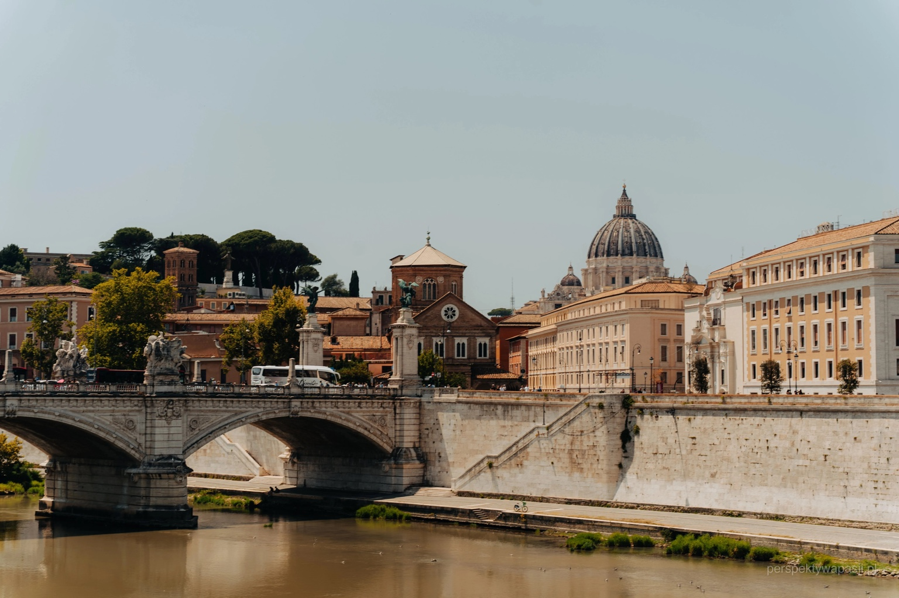

<!-- Sekcja kart v11: górna i dolna część; bez clipów, 50px feather; odbicie w tle dolnej -->
<link rel="stylesheet" href="cards_v11.css">
<section class="container" id="karty-wycieczek">
  <div class="cards">
    
<article class="card" aria-label="WŁOCHY — Samolotem (Jubileusz)">
  <div class="top">
    <div class="imgwrap"></div>
    <span class="badge">Samolotem</span>
    <span class="days">Dni: 8</span>
    <span class="seats">Miejsca: 12</span>
  </div>
  <div class="seam"></div>
  <div class="bottom">
    <div class="bg"></div>
    <div class="tint"></div>

    <div class="content">
      <h3 class="title">WŁOCHY — Samolotem (Jubileusz)</h3>
      <div class="meta">Data: <strong>7–14.10.2025</strong></div>
      <div class="cities"><strong>Miejscowości:</strong> Cascia → Asyż → Lanciano → Manoppello → San Giovanni Rotondo → Monte Sant’Angelo → Pompeje → Neapol → Rzym → Watykan</div>
      <div class="desc">Sanktuaria św. Ojca Pio, Manoppello i miejsca św. Franciszka. Program duchowy i zwiedzanie.</div>

      <div class="bar">
        <div class="price">1900 PLN <span class="sep">|</span> 480 EUR</div>
        <a class="btn ghost" href="https://piotrtravel.pl/wp-content/uploads/2025/07/WLOCHY-samolot-7-14.10.2025.pdf" target="_blank" rel="noopener">Program PDF</a>
        <a class="btn primary" href="https://piotrtravel.pl/15-22-03-2025-wlochy-samolotem/" target="_blank" rel="noopener">Rezerwuj</a>
      </div>
    </div>
  </div>
</article>

<article class="card" aria-label="MEDJUGORIE — Samolotem + Adriatyk">
  <div class="top">
    <div class="imgwrap"></div>
    <span class="badge">Samolotem</span>
    <span class="days">Dni: 7</span>
    <span class="seats">Miejsca: 8</span>
  </div>
  <div class="seam"></div>
  <div class="bottom">
    <div class="bg"></div>
    <div class="tint"></div>

    <div class="content">
      <h3 class="title">MEDJUGORIE — Samolotem + Adriatyk</h3>
      <div class="meta">Data: <strong>28.09–04.10.2025</strong></div>
      <div class="cities"><strong>Miejscowości:</strong> Sarajewo → Mostar → Tihaljina → Šurmanci → Wodospady Kocusa → Chorwackie Lourdes → Medjugorje</div>
      <div class="desc">Medjugorje, Mostar i odpoczynek nad Adriatykiem. Balans modlitwy i zwiedzania.</div>

      <div class="bar">
        <div class="price">1790 PLN <span class="sep">|</span> 300 EUR</div>
        <a class="btn ghost" href="https://piotrtravel.pl/wp-content/uploads/2025/05/Medj.-SAMOLOTEM-SPLIT-28.09-4.10.2025.pdf" target="_blank" rel="noopener">Program PDF</a>
        <a class="btn primary" href="https://piotrtravel.pl/" target="_blank" rel="noopener">Rezerwuj</a>
      </div>
    </div>
  </div>
</article>

<article class="card" aria-label="TURCJA — Siedem Kościołów Apokalipsy">
  <div class="top">
    <div class="imgwrap"></div>
    <span class="badge">Samolotem</span>
    <span class="days">Dni: 8</span>
    <span class="seats">Miejsca: 16</span>
  </div>
  <div class="seam"></div>
  <div class="bottom">
    <div class="bg"></div>
    <div class="tint"></div>

    <div class="content">
      <h3 class="title">TURCJA — Siedem Kościołów Apokalipsy</h3>
      <div class="meta">Data: <strong>27.04–04.05.2025</strong></div>
      <div class="cities"><strong>Miejscowości:</strong> Troja → Izmir → Efez → Kolosy → Laodycea → Pamukkale/Hierapolis → Filadelfia → Sardes → Tiatyra → Pergamon → Stambuł</div>
      <div class="desc">Efez, Laodycea i pozostałe Kościoły Apokalipsy — finał w Stambule.</div>

      <div class="bar">
        <div class="price">1890 PLN <span class="sep">|</span> 750 EUR</div>
        <a class="btn ghost" href="https://piotrtravel.pl/wp-content/uploads/2024/11/TURCJA-SAMOLOT-27.04-4-05.2025.pdf" target="_blank" rel="noopener">Program PDF</a>
        <a class="btn primary" href="https://piotrtravel.pl/27-04-4-05-2025-pielgrzymka-do-turcji-siedem-kosciolow-apokalipsy/" target="_blank" rel="noopener">Rezerwuj</a>
      </div>
    </div>
  </div>
</article>

  </div>
</section>
